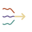
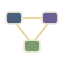
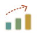

I build products, systems and the team behind both.
I work across product thinking, design, systems and technology, figuring out how things should work, how they should feel, and what it takes to bring them to life.
Over the last 11+ years, I’ve designed digital experiences, built design systems, grown design teams and worked on products from the ground up. These days, I’m leading product design at Bajaj Finserv Health, working across multiple products and helping turn complex ideas into thoughtful experiences.
I’m particularly interested in the space where design, technology and AI come together, and in finding better ways to build things.
I spent four years at Decos, a Netherlands-based technology company, where I built my foundation working on digital products and collaborating closely with technology teams.
For the last 6+ years, I’ve been at Bajaj Finserv Health, where a big part of my journey has been building and growing the design team. I’ve had the opportunity to shape how the team works, establish design practices, introduce systems that support scale, and bring designers, product managers and engineers closer together.
Over time, my curiosity has moved beyond the design canvas. I’ve developed a stronger interest in the technical side of building products: understanding frontend architecture, design-to-code workflows, component systems and how interfaces translate into working software.
On this site, you’ll find a collection of my work, the thinking and strategy behind the products I shape, and the teams and design practices I’ve helped build.
There’s also a little writing on design and technology, experiments and side projects born out of curiosity, and some fun stuff from life outside work.

clarity over complexity.
systems over silos.
progress over perfection.I’m particularly interested in the intersection of design, product thinking and AI.
I’m exploring AI-assisted workflows and technologies like React, React Native, Expo and Supabase to move beyond static designs, build functional experiences and bring ideas to life faster.
I enjoy getting closer to the code, experimenting with new ways of working and making the connection between design and development more seamless.